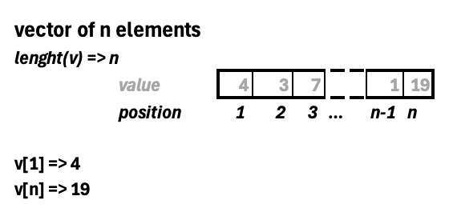

[1] 11Objects
An object in R is a data structure that has some attributes and methods (functions)…
We will see the following objects:
- Basic types (numeric, characters and logical)
- Vectors
- Lists
- Data frames
- Matrix
- Arrays
- Datetime
- Factors
Basic Types
For programming R uses different data types that we need to know and understand. Data types are the basic objects we will work with and that are used to create much more complex objects.
numeric
numeric type is the one used for working with numbers…
You can know the type of an object using the function class to know the exactly which one you are working with.
class(d)[1] "numeric"Inside numeric class we can have different sub-types as it is a family of types for representing all number formats.
# typeof checks the inner type inside the class
typeof(d)[1] "double"typeof(1.5)[1] "double"typeof(1L) # integer[1] "integer"class() or typeof()
You have seen we have use class() and typeof() method to identify an object type.
class()is more generic as it identifies the object class, a basic R structure that defines a common properties shared with types of the same class.typeof()is more accurate to the specific type.
In some cases (mostly) it will return the same output.
But if we want to verify that an object is numeric we can use the is.numeric() function. That will check if the object is from class numeric.
# Check if a value is of certain type
is.numeric(1L)[1] TRUESee that the function returns a “word” called TRUE. This is not exactly a word is an other type called boolean that we will learn later. In this case TRUE means that the object is a numeric type.
character
character data type is the one used for working with texts.
sentence <- "may the force be with you"
typeof(sentence)[1] "character"You can know the number of letters an object of type character has with nchar() function (number of characters). Consider that white spaces are also characters.
nchar(sentence)[1] 25You can transform to one type to another. For example, we have a number written as a character and we want to use it as a number.
number <- "20"
10 + as.numeric(number)[1] 30You can do the opposite too… transform a number to a text with as.character
num <- 10 + as.numeric(number)
num [1] 30as.character(num)[1] "30"logical
Also known as boolean values,
class(TRUE)[1] "logical"class(FALSE)[1] "logical"Normally they are the result of the evaluation of logical expressions (conditions)
class(1 == 1) # equal[1] "logical"1 > 5[1] FALSEHere you have a summary of different possible conditions…
Summary of logical operations…
| Operator | Definition | Use example (all of them are TRUE) |
|---|---|---|
== |
Equal | 10 == 10 |
!= |
Distinct | 10 != 20 |
> |
Higher | 10 > 9 |
>= |
Higher or Equal | 10 >= 9, 10 >= 10 |
< |
Lower | 9 < 10 |
<= |
Lower or Equal | 9 <= 10, 10 <= 10 |
%in% |
Is inside a collection | 9 %in% c(1,8,9,10) |
They can be seen as numeric values too, this is coercion, again…
TRUE == 1[1] TRUEFALSE == 0[1] TRUE
Basic Types Functions
We have seen that we can use several functions to transform between types and also to check types.
Transformation Functions
| function | decription |
|---|---|
as.numeric() |
to change to numeric |
as.character() |
to change to character |
as.logical() |
to change to logical |
Type Verification Functions
| function | decription |
|---|---|
is.numeric() |
to check to numeric |
is.character() |
to check to character |
is.logical() |
to check to logical |
Vectors
In the last data types we have work with a single value or element, but sometimes we will need to work with a collection of elements. A vector is collection of elements of the same data type
numbers <- c(1, 2, 3.23, 4.223, 5.21, 6.6)
words <- c("hotel", "dinosaur", "transport")
logical <- c(TRUE, FALSE, TRUE, FALSE, TRUE, TRUE)
numbers[1] 1.000 2.000 3.230 4.223 5.210 6.600If we check the data type of a vector it will return the basic type of its values. So a vector can only be of a single basic type.
typeof(words)[1] "character"In fact, if you try to create a vector of different types. R will try to understand the basic type and apply it to all elements. This is called coercion. Read more about coercion here.
If you want to check that an object is a vector you can use is.vector function.
is.vector(words)[1] TRUESelection of elements
As vectors have several values, we will want to access the different elements individually. For doing that we just need to enter the position we want to access to.
And you can access a range of elements directly…
numbers[2:4][1] 2.000 3.230 4.223And make a much more wise selection using a vector with the position, in the example we want elements 1 and 4. It will return a new vector with the values of the selected positions.
numbers[c(1,4)][1] 1.000 4.223For vectors, we have an specific function to know exactly the number of elements we have in the vector: length()
length(words)[1] 3To summarise everything we know about vectors you can check this schema:

Exercise: Selecting values of a vector
Using the following vector v <- seq(1,200,4) select the last 10 elements
Modification of elements
Using the selection syntax we have seen we can also modify parts of the vector, instead of changing the whole vector.
And you can modify multiple elements if needed:
[1] 100 2 300 400 5 6 7 8 9 10Operations with vectors
In the last example of modification we have seen what we call an element-wise operation
R is capable on adapt the operations with vectors depending on their size to apply the operation to all elements.
- Vector - Number: it will apply the same operation with that number to all elements of the vector
- Vector - Vector (same length): it will apply the operation between the same positions of each vector.
- Vector - Vector (different length)
[1] 1 2[1] 1 2 3 4[1] 1 4 3 8When doing a operation of vectors with different length, R will compare both of them. The shorter one will try to adapt to the size of the bigger one, so elements will be repeated on the short vector until it reaches the larger one. If the short one cannot cover the larger one R will show you a warning message.
Warning in f * g: longer object length is not a multiple of shorter object
length[1] 1 4 9 4
Warning messages
A warning in programming is a message shown by the computer informing us of an undesired behavior in the execution. They are not errors as the code has been able to perform the execution successfully but it inform us in case the operation has not been done correctly.
Lists
As we have seen vectors can only contain elements of the same data type, if we need to create a collection of elements of different types we should work with lists.
[[1]]
[1] "A" "B"
[[2]]
[1] 1 2 3 4 5 6 7 8 9 10
[[3]]
[1] "2026-08-30 14:24:20 CEST"In contrast with vectors, lists are considered a data type (object):
class(mylist)[1] "list"Selection of elements
For acceding the elements of a list we need to consider that each position of the list stores objects inside. So we have two ways of acceding the elements:
- Acceding the position (similar to vectors)
- Acceding the element inside that position
# acceding at the second position of the list
mylist[2][[1]]
[1] 1 2 3 4 5 6 7 8 9 10# acceding at the second element of the list
mylist[[2]] [1] 1 2 3 4 5 6 7 8 9 10To understand the difference look what happens when we ask for the types…
class(mylist[2])[1] "list"class(mylist[[2]])[1] "integer"In the first case we are obtaining a new list with the element selected. While on the second case we exactly obtaining the element, in this case a vector of characters.
One insteresting fact of lists, is that you can assign names to the each elements…
# Now each element of mylist2 has an assigned name
mylist2 <- list(letters = c("A", "B"), numbers = 1:10, time = Sys.time())
mylist2$letters
[1] "A" "B"
$numbers
[1] 1 2 3 4 5 6 7 8 9 10
$time
[1] "2026-08-30 14:24:20 CEST"These names can be used for accessing each element too:
$letters
[1] "A" "B"[1] "A" "B"[1] "A" "B"If you are not sure if the list you are working with has names in their elements you can use the attributes function.
attributes(mylist2)$names
[1] "letters" "numbers" "time" You can see that this list contains some names defined. You can also use names function to see it.
names(mylist2)[1] "letters" "numbers" "time" Matrix
We use it for storing bi-dimensional structures…
m <- matrix(1:10, nrow=2)
m [,1] [,2] [,3] [,4] [,5]
[1,] 1 3 5 7 9
[2,] 2 4 6 8 10m <- matrix(1:10, nrow=2, byrow=TRUE)
m [,1] [,2] [,3] [,4] [,5]
[1,] 1 2 3 4 5
[2,] 6 7 8 9 10We can check number of elements in each dimension of the matrix.
ncol(m)[1] 5nrow(m)[1] 2Arrays
Datetime
We can manage dates and time inside R…
hour <- Sys.time()
hour[1] "2026-08-30 14:24:20 CEST"typeof(hour)[1] "double"class(hour)[1] "POSIXct" "POSIXt" Factors
Factors are used to store categorical variables, with a fixed level of categories…
addict <- factor(c("YES", "NO", "NO", "YES"))
attributes(addict)$levels
[1] "NO" "YES"
$class
[1] "factor"# We can pass from a factor to a character
addict <- as.character(addict)
class(addict)[1] "character"